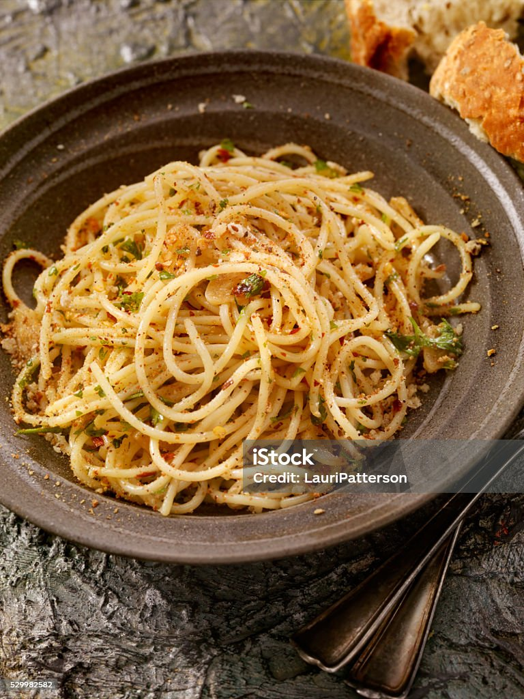

Simple Pasta Aglio e Olio (Garlic and Olive Oil Pasta)

Ingredients
- 200g spaghetti (or any pasta of your choice)
- 4 cloves garlic, thinly sliced
- 1/4 cup olive oil
- 1/2 tsp red pepper flakes (optional)
- Salt (to taste)
- Freshly ground black pepper (to taste)
- Fresh parsley, chopped (for garnish)
- Grated Parmesan cheese (optionalGrated Parmesan cheese)
Steps
- Cook the pasta: In a large pot, bring salted water to a boil. Add the spaghetti and cook according to package instructions (about 9-10 minutes). Drain and reserve some pasta water.
- Prepare the sauce:In a large skillet, heat olive oil over medium heat. Add the sliced garlic and cook until golden brown (about 2 minutes). Be careful not to burn the garlic.
- Add red pepper flakes (optional) and sauté for another 30 seconds.
- Combine: Add the cooked pasta to the skillet, tossing it in the oil and garlic. If the pasta seems dry, add a little reserved pasta water to make it saucy.
- Season: Add salt and freshly ground black pepper to taste.
- Serve: Garnish with chopped parsley and, if desired, sprinkle with Parmesan cheese.
Home